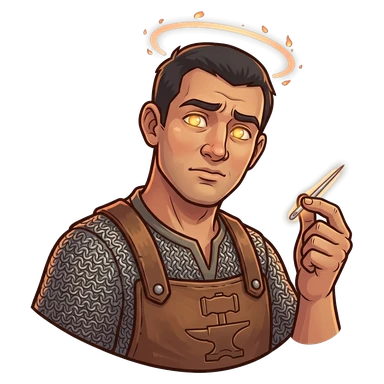
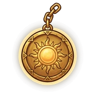

Enrique Foster


ClericEnrique Foster, Follower of the Needle
After their quest: Enrique Foster, Who Found the Way
He forged a magic needle that points the way. He still gets lost.
Ability
His party heals twice as fast, but takes 10% longer (he gets lost)
That's the value at Lv 10: at Lv 1 it's half and it grows every level.
How to get them
Shows up as a recruit candidate at the Inn.
Quest
Enrique finds the way · Michumi's Glacier
How it ends · Show spoiler
For the first time in his life, Enrique got where he was going. The needle cried.
Party names
Show spoiler
- Lost and Quiet: Enrique Foster + Carrlos
- Fast to Nowhere: Takuan + Enrique Foster
- Which Way Was It?: Enrique Foster + Bibi
Chronicles
They unlock in-game as they level up. Each gives 1 Rune the first time you read it.
Chapter 1 (Lv 1) · Show spoiler
The lying north
Enrique Foster was born with a calm light in his hands. At the temple they said: "Enrique doesn't lead to command; he leads to soothe." When he healed, the world remembered how to breathe. But he had a flaw nobody could fix: whenever he tried to remember an important road or name, his head became a map with the north swapped. He was sure he was going the right way, and still led everyone to the wrong place. The veterans called him "the one who knows where north is… even when north lies."
Chapter 2 (Lv 5) · Show spoiler
The wrong room
In Luminaria, a cult sold certainty to frightened people. The temple sent Enrique to recover a registry of oaths with a local guardian. "Of course, it's Don Talvar, from the Red Lantern," Enrique said, perfectly serene. It was Don Siver, in another district. Since Enrique never shouts, everyone followed him. He sorted papers, calmed the frightened and even caught a thief. He did everything right… in the room that didn't matter. By the time they reached the right one, the cult had taken the registry.
Chapter 3 (after their quest) · Show spoiler
The needle
"You save, but you don't guide," Sister Valdren told him, and he lost command of the expeditions. So Enrique forged himself a magic needle that points the way. He still got lost: the needle pointed true, but he read it with his own north. In the Glacier, with no map and no road, he decided to trust the needle instead of himself. For the first time in his life, he got where he was going. The needle cried. Since that day he is Enrique Foster, Who Found the Way.
Chapter 4 (Lv 15) · Show spoiler
Late, but healed
Traveling with Enrique has one rule: it will take longer. Once he went out for bread and came back three days later; the bakery was across the street. But nobody at the Inn complains, because when they finally arrive, they arrive healed. Enrique's bandages close wounds in half the time, and his calm makes even a defeated party breathe easy. Getting lost with him is almost a rest.
Chapter 5 (Lv 20) · Show spoiler
The true north
He promised the temple he would find his true path. It took a while (of course), but he found it, and it wasn't on any map: it was the table at the Inn, with TomTom pouring and the party arguing about where to go. Enrique no longer wants to guide anyone. He'd rather walk at the back, hands ready to heal. They say he still keeps the needle, in case he ever goes back to Luminaria for the registry that got away. If he does, it will take a while.
Their player
This character is played by a real player from the D&D campaign that inspired the game.